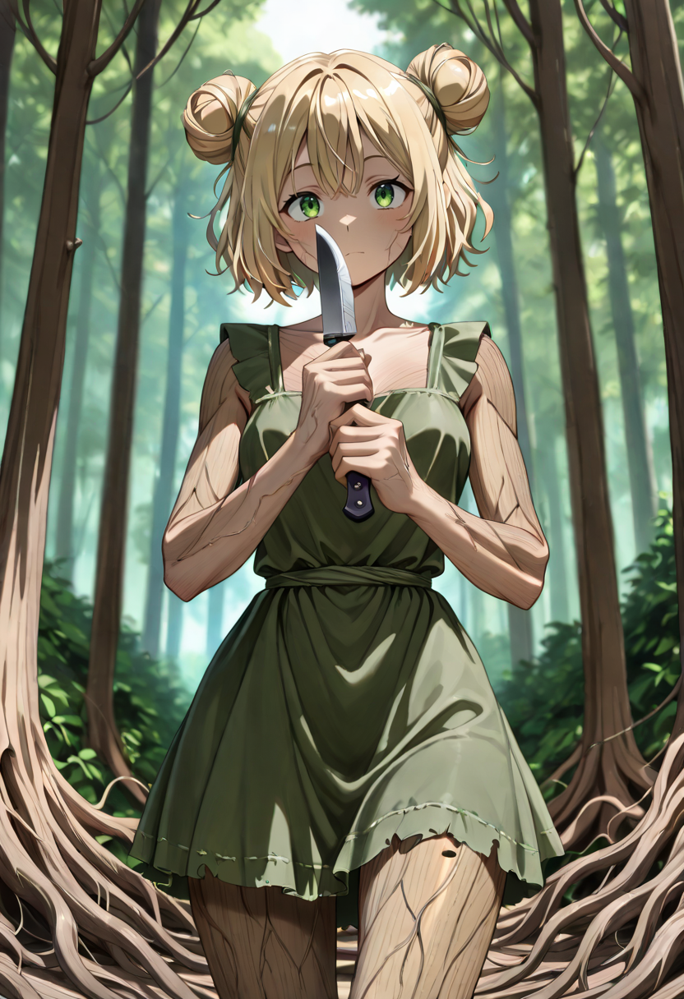
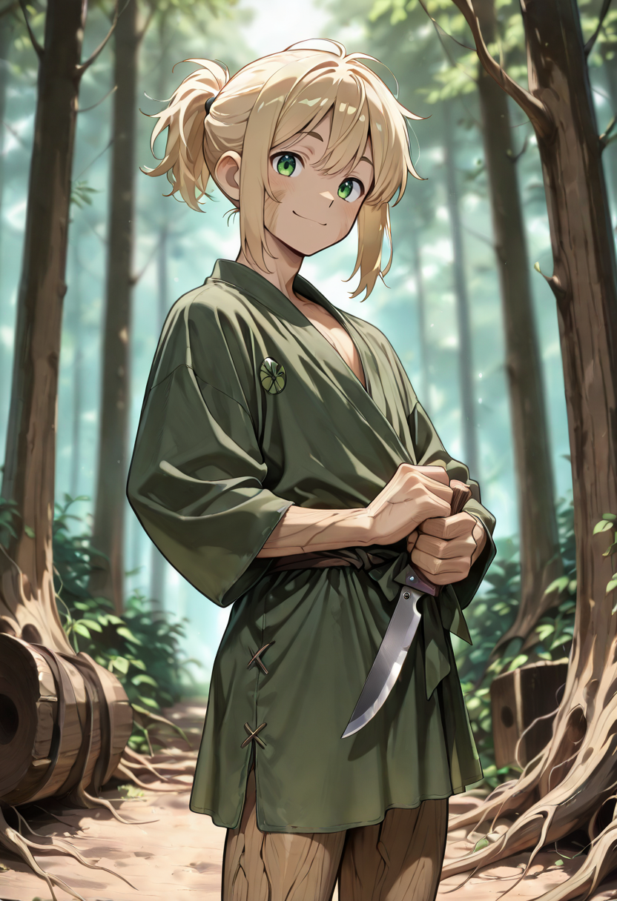
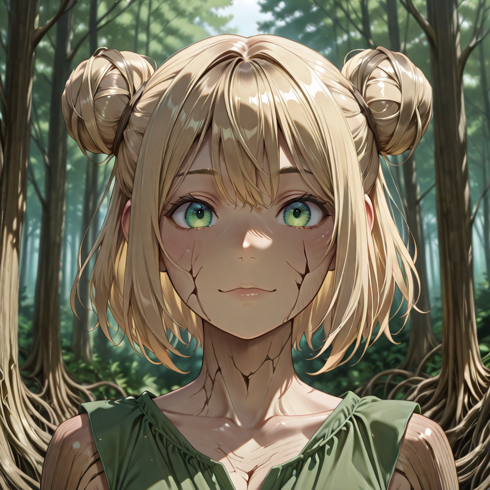

The Memory Moves First
The Shadow Combatant chose differently. When faced with the choice between stand and stay or move and survive, their body answered before their mind did , and that answer was motion. Their arboreal form began to thin, becoming less like wood and more like shadow, less like a tree and more like the space between trees.
They have not yet recovered their past self. But they are beginning to feel it. A grace in the wrist. A habit of stepping silently. An instinct to check every shadow before entering a room. The fragments do not cohere into a name or a face yet , but they are there, and the Shadow Combatant fights with the urgency of someone trying to remember who they were before they became this.
Their most dangerous trait is not their speed but their undetectability to backline units. They move through the noise of the frontline the way water moves through rock , not by force, but by finding every available crack. Their poisoned strikes are carefully learned, drawn from a lifetime they can't quite recall.
Tactical Data
Slash
Base AttackStealth Attack
ActiveGallery
